# Load the required packages
library(CASdatasets)
library(tidyverse)
library(MASS) # stepAIC() and glm.nb()
library(statmod)
library(MLmetrics)Lab: GLM
Actuarial Data Science - Open Learning Resource
Learning Objectives
Perform GLM modelling for aggregate claims, claims frequency, and claims severity.
Understand the specification and assumptions of GLMs. Learn how to set offsets and adjust weights when building GLMs.
Select and validate GLMs appropriately. Try different distributions and compare their fit and predictive performance.
Frequency-Severity Analysis
Many insurance data sets contain information about both how often claims arise (frequency) and the size of claims (severity). Observable responses can include:
N, the number of claims (claim count),
y_k, \, k = 1, \ldots, N, the amount of each claim (loss), and
S = y_1 + \cdots + y_N, the aggregate claim amount (aggregate loss).
E, the exposure.
By convention, the set \{y_j\} is empty when N = 0.
For modelling the joint outcome (N, S) (or equivalently (N, \bar{S})), it is customary to first model the frequency and then model the severity conditional on the frequency. Suppressing the \{i\} subscript, we decompose the distribution (per unit exposure) of the dependent variables as:
\begin{aligned} f(N,S) &= f(N) \times f(S \mid N)\\ \text{joint} &= \text{frequency} \times \text{conditional severity}, \end{aligned}
where f(N, S) denotes the joint distribution of (N, S).
Here is a summary:
Frequency = Claim Count / Exposure
Severity = Aggregate Loss / Claim Count
Pure Premium = Aggregate Loss / Exposure = Frequency \times Severity
Data Import and Preparation
In this lab, we use the same French insurance datasets, freMTPL2freq and freMTPL2sev, as in the previous labs. Following Wüthrich and Merz (2023), the code below performs some data cleaning and merges freMTPL2freq with the aggregated claim severities for each insurance policy in freMTPL2sev.
Note that this process does not retain the claim count information from freMTPL2freq; instead, the claim counts are reconstructed from freMTPL2sev.
# Load datasets
data(freMTPL2freq)
data(freMTPL2sev)
# Data pre-processing
freq_data <- freMTPL2freq[, -2] # Remove the ClaimNb column
freq_data$VehGas <- factor(freq_data$VehGas)
sev_data <- freMTPL2sev
sev_data$ClaimNb <- 1
# Aggregate over numeric columns
agg_sev <- aggregate(
sev_data[, c("ClaimAmount", "ClaimNb")],
by = list(IDpol = sev_data$IDpol),
FUN = sum
)
names(agg_sev)[2] <- "ClaimTotal"
merged_data <- merge(
x = freq_data,
y = agg_sev,
by = "IDpol",
all.x = TRUE
)
merged_data[is.na(merged_data)] <- 0
merged_data <- merged_data[merged_data$ClaimNb <= 5, ]
merged_data$Exposure <- pmin(merged_data$Exposure, 1)
freMTPL2full <- merged_dataTask: Data Validation and Cleaning
Task: Data Validation and Cleaning
As pointed out in Wüthrich and Merz (2023), “the claim counts on the insurance policies with policy IDs \leq 24500 in freMTPL2freq do not seem to be correct because these claims do not have claim severity counterparts in freMTPL2sev. For this reason, we work with the claim counts extracted from the latter file.”
Could you investigate whether this claim is supported by the data? Also, what data cleaning steps are performed in the code above?
Solution
To investigate the claim about policy IDs \leq 24500, we can check whether there are policies with positive claim counts in freMTPL2freq that do not have corresponding entries in freMTPL2sev. If many such policies exist, this would support the statement made by Wüthrich and Merz (2023).
# Count duplicated IDs in freMTPL2sev
num_duplicate_ids_sev <- freMTPL2sev %>%
count(IDpol) %>%
filter(n > 1) %>%
nrow()
cat(
"Number of duplicated IDpol values in freMTPL2sev:",
num_duplicate_ids_sev,
"\n"
)Number of duplicated IDpol values in freMTPL2sev: 1379 # Count duplicated IDs in freMTPL2freq
num_duplicate_ids_freq <- freMTPL2freq %>%
count(IDpol) %>%
filter(n > 1) %>%
nrow()
cat(
"Number of duplicated IDpol values in freMTPL2freq:",
num_duplicate_ids_freq,
"\n"
)Number of duplicated IDpol values in freMTPL2freq: 0 # IDs with ClaimNb > 0 in freMTPL2freq
ids_claim_nb_gt_zero <- freMTPL2freq %>%
filter(ClaimNb > 0) %>%
pull(IDpol) %>%
unique()
# Unique IDs in freMTPL2sev
unique_ids_sev <- freMTPL2sev %>%
pull(IDpol) %>%
unique()
# IDs not appearing in freMTPL2sev
ids_not_in_sev <- setdiff(ids_claim_nb_gt_zero, unique_ids_sev)
num_ids_not_in_sev <- length(ids_not_in_sev)
cat(
"Number of IDs with ClaimNb > 0 in freMTPL2freq but not in freMTPL2sev:",
num_ids_not_in_sev,
"\n"
)Number of IDs with ClaimNb > 0 in freMTPL2freq but not in freMTPL2sev: 9116 From the results above, we can infer that each row in freMTPL2freq represents a unique policy, while each row in freMTPL2sev represents an individual claim. Therefore, the claim amount information in freMTPL2sev needs to be aggregated to the policy level before merging.
There are 9116 policy IDs with ClaimNb > 0 in freMTPL2freq that do not appear in freMTPL2sev, which supports the assertion made by Wüthrich and Merz (2023).
Recalling the discussion from the previous lab, the following data cleaning steps were performed:
freq_data$VehGas <- factor(freq_data$VehGas): ConvertsVehGasfrom a character variable to a factor.merged_data[is.na(merged_data)] <- 0: Replaces missing values with 0 after merging, treating missing claim information as zero claims or zero claim amounts.merged_data <- merged_data[merged_data$ClaimNb <= 5, ]: Removes policies with more than five claims.merged_data$Exposure <- pmin(merged_data$Exposure, 1): Caps exposure values at 1.
Data Splitting
We split the dataset freMTPL2full into training and test sets, with 70% allocated to the training set. The selected indices are stored in train_indices, which can then be used to subset the data into training and test sets, as shown in the commented-out lines below.
Note that in this lab, we primarily use train_indices directly whenever training or test data are required.
# Split the data
set.seed(903)
train_indices <- sample(
1:nrow(freMTPL2full),
size = 0.7 * nrow(freMTPL2full)
)
# train_data <- freMTPL2full[train_indices, ]
# test_data <- freMTPL2full[-train_indices, ]Modeling Claim Frequency Using GLMs
It has become routine for actuarial analysts to model claim frequency based on covariates x_i using generalized linear models (GLMs). For count outcomes, one typically begins with a Poisson or negative binomial distribution. Moreover, to handle the excessive number of zeros relative to that implied by these distributions, analysts may also examine zero-inflated models.
A strength of GLMs relative to other non-linear models is that the mean can be expressed as a simple function of linear combinations of the covariates. In insurance applications, it is common to use a logarithmic link function and express the mean as
\mu_i = \mathbb{E}[N_i] = \exp(x_i^\top \beta),
where \beta is a vector of parameters associated with the covariates. This link function is widely used because it yields interpretable parameters, often fits the data reasonably well, and aligns naturally with traditional actuarial ratemaking approaches.
Our objective is to build GLMs to predict claim frequency using related risk factors, select the most promising model, interpret the results, and quantify predictive performance.
Remark (Interaction terms): Two predictors are said to interact if the effect of one predictor on the mean response depends on the value of the other. The product term x_1 \times x_2 models an interaction between x_1 and x_2. Except in special circumstances, a model including an interaction term should also include the corresponding main effects (i.e., terms with each of the predictors, x_1 and x_2).
Remark (Basis Expansions): Similar to linear models, we can extend features using basis functions such as polynomials or splines. The basis expansion model becomes
g(\mu) = \beta_0 + h(x_1)\beta_1 + \cdots + h(x_p)\beta_p.
Additionally, recall that Generalized Additive Models (GAMs) were introduced in the “Moving Beyond Linearity” section of the prerequisite course. Feel free to explore them further on your own.
Remark (Shrinkage Techniques): Recall the shrinkage techniques discussed previously. Using the glmnet package, we can fit GLMs with shrinkage methods such as ridge regression and lasso regression.
Poisson GLM for Claim Frequencies
Task: Poisson GLM Fitting
Task: Poisson GLM Fitting
Fit a Poisson GLM using all available training data except IDpol. Model the number of claims per policy as the target variable and include an offset for exposure.
Task Solution
# Poisson GLM using training data
freqPoisson_full <- glm(
ClaimNb ~ VehPower + VehAge + DrivAge + BonusMalus +
VehBrand + VehGas + Density + Region + Area,
data = freMTPL2full,
subset = train_indices,
offset = log(Exposure),
family = poisson(link = "log")
)
summary(freqPoisson_full)
Call:
glm(formula = ClaimNb ~ VehPower + VehAge + DrivAge + BonusMalus +
VehBrand + VehGas + Density + Region + Area, family = poisson(link = "log"),
data = freMTPL2full, subset = train_indices, offset = log(Exposure))
Deviance Residuals:
Min 1Q Median 3Q Max
-2.4749 -0.3267 -0.2474 -0.1399 6.3287
Coefficients:
Estimate Std. Error z value Pr(>|z|)
(Intercept) -4.668e+00 1.344e-01 -34.734 < 2e-16 ***
VehPower 3.761e-02 3.918e-03 9.599 < 2e-16 ***
VehAge -1.889e-02 1.538e-03 -12.280 < 2e-16 ***
DrivAge 5.322e-03 5.497e-04 9.681 < 2e-16 ***
BonusMalus 2.607e-02 3.964e-04 65.775 < 2e-16 ***
VehBrandB10 -5.049e-02 4.779e-02 -1.057 0.290705
VehBrandB11 1.435e-01 4.983e-02 2.880 0.003971 **
VehBrandB12 -3.153e-01 2.630e-02 -11.989 < 2e-16 ***
VehBrandB13 7.807e-02 5.262e-02 1.484 0.137865
VehBrandB14 -1.444e-01 1.032e-01 -1.399 0.161775
VehBrandB2 -2.953e-04 2.045e-02 -0.014 0.988477
VehBrandB3 3.868e-02 2.858e-02 1.353 0.175999
VehBrandB4 2.531e-02 3.890e-02 0.651 0.515259
VehBrandB5 8.241e-02 3.274e-02 2.517 0.011844 *
VehBrandB6 -3.121e-03 3.736e-02 -0.084 0.933415
VehGasRegular -1.618e-01 1.519e-02 -10.649 < 2e-16 ***
Density -3.890e-07 5.096e-06 -0.076 0.939165
RegionAquitaine 7.626e-02 1.267e-01 0.602 0.547156
RegionAuvergne -2.471e-02 1.565e-01 -0.158 0.874580
RegionBasse-Normandie -9.192e-03 1.336e-01 -0.069 0.945132
RegionBourgogne 4.055e-03 1.376e-01 0.029 0.976486
RegionBretagne -6.685e-04 1.247e-01 -0.005 0.995721
RegionCentre -1.520e-02 1.227e-01 -0.124 0.901459
RegionChampagne-Ardenne -4.511e-02 1.836e-01 -0.246 0.805912
RegionCorse 2.104e-03 1.646e-01 0.013 0.989804
RegionFranche-Comte -1.295e-01 2.341e-01 -0.553 0.580229
RegionHaute-Normandie -8.565e-02 1.469e-01 -0.583 0.559896
RegionIle-de-France -1.724e-02 1.247e-01 -0.138 0.890056
RegionLanguedoc-Roussillon -9.995e-03 1.272e-01 -0.079 0.937389
RegionLimousin 2.517e-01 1.511e-01 1.666 0.095783 .
RegionMidi-Pyrenees -2.524e-01 1.364e-01 -1.851 0.064236 .
RegionNord-Pas-de-Calais -8.369e-02 1.258e-01 -0.665 0.505778
RegionPays-de-la-Loire 8.354e-03 1.252e-01 0.067 0.946790
RegionPicardie 2.230e-02 1.402e-01 0.159 0.873600
RegionPoitou-Charentes 6.059e-02 1.287e-01 0.471 0.637819
RegionProvence-Alpes-Cotes-D'Azur 1.144e-01 1.233e-01 0.928 0.353478
RegionRhone-Alpes 2.028e-01 1.228e-01 1.652 0.098632 .
AreaB 1.044e-01 3.135e-02 3.330 0.000868 ***
AreaC 1.516e-01 2.606e-02 5.818 5.97e-09 ***
AreaD 2.982e-01 2.760e-02 10.806 < 2e-16 ***
AreaE 4.020e-01 3.582e-02 11.221 < 2e-16 ***
AreaF 4.616e-01 1.239e-01 3.724 0.000196 ***
---
Signif. codes: 0 '***' 0.001 '**' 0.01 '*' 0.05 '.' 0.1 ' ' 1
(Dispersion parameter for poisson family taken to be 1)
Null deviance: 120058 on 474603 degrees of freedom
Residual deviance: 115076 on 474562 degrees of freedom
AIC: 150765
Number of Fisher Scoring iterations: 6What are Weights and Offsets?
To better understand the role of weights and offsets in GLMs, consider the following excerpts from Generalized Linear Models for Insurance Rating by Goldburd et al. (2016), targeted at actuaries in the property/casualty insurance industry:
For Weights:
Frequently, the dataset going into a GLM will include rows that represent the averages of the outcomes of groups of similar risks rather than the outcomes of individual risks. For example, in a claim severity dataset, one row might represent the average loss amount for several claims, all with the same values for all the predictor variables. Or, perhaps, a row in a pure premium dataset might represent the average pure premium for several exposures with the same characteristics (perhaps belonging to the same insured).
In such instances, it is intuitive that rows that represent a greater number of risks should carry more weight in the estimation of the model coefficients, as their outcome values are based on more data. GLMs accommodate that by allowing the user to include a weight variable, which specifies the weight given to each record in the estimation process.
For (Exposure) Offsets:
Offsets are also used when modeling a target variable that is expected to vary directly with time on risk or some other measure of exposure. An example would be where the target variable is the number of claims per policy for an auto book of business where the term lengths of the policies vary; all else equal, a policy covering two car years is expected to have twice the claims as a one-year policy. This expectation can be reflected in a log-link GLM by including the (logged) number of exposures - car years in this example - as an offset.
Note that this approach is distinct from modeling claims frequency, i.e., where the target variable is the number of claims divided by the number of exposures, which is the more common practice. In a frequency model, the number of exposures should be included as a weight, but not as an offset. In fact: a claim count model that includes exposure as an offset is exactly equivalent to a frequency model that includes exposure as a weight (but not as an offset) - that is, they will yield the same predictions, relativity factors and standard errors.
In general, weights can either be identically one or be included as inputs into the GLM. In insurance applications, the number of claims or exposures is often used as a measure for these weights.
Suppose your data contains exposure information. You might then wonder whether exposure should be introduced into the GLM as a weight or as an offset. Interestingly, a claim count model that includes exposure as an offset (i.e., where the response is the claim count) is exactly equivalent to a frequency model that includes exposure as a weight (but not as an offset; i.e., where the response is the claim frequency) when the claim distribution is Poisson or overdispersed Poisson.
To better understand the difference between weights and offsets, consider the following paragraph extracted from Generalized Linear Models for Insurance Rating. You are also encouraged to read the relevant sections of the book for a deeper understanding:
To gain an intuition for this relationship, recall that an offset is an adjustment to the mean, while the weight is an adjustment to the variance. For a claim count model, additional exposures on a record carry the expectation of a greater number of claims, and so an offset is required. While the variance of the claim count is also expected to increase with increasing exposure—due to the exponential family’s inherent expectation of greater mean implying greater variance — this is naturally handled by the GLM’s assumed mean/variance relationship, and so no adjustment to variance (i.e., no weight variable) is necessary. For a claim frequency model, on the other hand, additional exposure carries the expectation of reduced variance (due to the larger volume of exposures yielding greater stability in the average frequency), but no change to the expected mean, and therefore a weight — but no offset — is needed.
The equivalence of the two models can be verified using the following code:
# Equivalent frequency model
freqPoisson_fullalt <- glm(
ClaimNb / Exposure ~ VehPower + VehAge + DrivAge + BonusMalus +
VehBrand + VehGas + Density + Region + Area,
data = freMTPL2full,
subset = train_indices,
weights = Exposure,
family = poisson(link = "log")
)
summary(freqPoisson_fullalt)Note that the AIC is reported as NA because AIC is based on the log-likelihood, and Poisson GLMs expect the response variable to be integer counts. When dividing by Exposure, the response becomes fractional, resulting in invalid likelihood values.
Model Interpretation
Task: Interpreting GLM Coefficients
Task: Interpreting GLM Coefficients
Interpret the GLM coefficients. Refit the full model by moving Density to the last predictor position, and compute an analysis of deviance table for the new GLM fit.
Task Solution
Let us focus on the summary output from the full Poisson model as an example.
The coefficient of
DrivAgeis 0.005322. When the driver’s age increases by 1, the log of the expected claim frequency \mu increases by 0.005322. Equivalently, \mu increases by \exp(0.005322)-1 = 0.534\%.We have one categorical variable called
Area, which can take the valuesA,B,C,D,E, orF. We handle this categorical variable using dummy coding. Notice thatAreaAis treated as the reference level, which is why we only observe coefficients for the other five levels (AreaB,AreaC,AreaD,AreaE, andAreaF).For example, the coefficient of
AreaBis 0.1044. This means that ifArea = B, then \log(\mu) is 0.1044 greater than that forAreaA. Equivalently, \mu increases by \exp(0.1044)-1 = 11.004\% relative toAreaA.The
z valueis the test statistic for the Wald test (see Section 5.8 of Generalized Linear Models for Insurance Data) that the parameter is equal to 0. Based on thePr(>|z|)values, most variables are not statistically significant at the 0.1% significance level.
Why do we want an analysis of deviance (ANOVA) table when we can already obtain Wald tests from the standard output (summary(glm))?
If a categorical variable has more than two levels, the summary output can be difficult to interpret. It provides tests for individual levels relative to the reference level, but does not directly provide a test for the factor as a whole.
Following the task instructions, let us refit the full model by moving Density to the last predictor position:
freqPoisson_anova <- glm(
ClaimNb ~ VehPower + VehAge + DrivAge + BonusMalus +
VehBrand + VehGas + Region + Area + Density,
data = freMTPL2full,
subset = train_indices,
offset = log(Exposure),
family = poisson(link = "log")
)Compare the outputs of summary(freqPoisson_anova) and summary(freqPoisson_full). You should find that the fitted models are identical.
The ANOVA table can optionally include test statistics and p-values comparing the reduction in deviance for each row to the residual deviance. For models with known dispersion, such as binomial and Poisson GLMs, the chi-squared test is most appropriate. For models where dispersion is estimated by moments, such as Gaussian, quasi-binomial, and quasi-Poisson GLMs, the F test is most appropriate (see the anova.glm documentation).
anova(freqPoisson_anova, test = "Chisq")# anova(freqPoisson_full, test = "Chisq")From the ANOVA table, we can test the factor Area as a whole. The result suggests that this factor is important in explaining the response variable.
In the ANOVA table, the Deviance column measures the reduction in residual deviance when each additional predictor is added to the model, compared with the previous model. For example, if no predictor is included, the residual deviance is 120058. After adding VehPower, the residual deviance drops from 120058 to 120027, indicating that VehPower helps explain variation in the response.
Question
How can we compare two nested models and test whether the larger model provides a better fit?
Assume Model 1 has q parameters with deviance D_1, and Model 2 has p parameters with deviance D_2, where p > q. Refer to the lecture notes on GLMs for the relevant rule of thumb.
You can use the ANOVA table to compare two nested models by computing the chi-squared test statistic D_1 - D_2. Following the rule of thumb mentioned in the GLM lecture, Model 2 is preferred if
D_1 - D_2 > 2(p - q).
You can also fit two models, say glm1 and glm2, and compare them using:
anova(glm1, glm2, test = "Chisq")If more than one model object is specified, the table gives the residual degrees of freedom and residual deviance for each model. For all but the first model, it also reports the change in degrees of freedom and deviance. This comparison only makes statistical sense when the models are nested. It is conventional to list the models from smallest to largest, but this is up to the user. Try it yourself.
Choosing the Distribution
Task: Alternative Frequency Distributions
Task: Alternative Frequency Distributions
Fit a Quasi-Poisson GLM using all available training data except IDpol. Compare the summary output with the corresponding Poisson GLM and perform diagnostic checks on both models.
Task Solution
freqQuasipoisson_full <- glm(
ClaimNb ~ VehPower + VehAge + DrivAge + BonusMalus +
VehBrand + VehGas + Density + Region + Area,
data = freMTPL2full,
subset = train_indices,
offset = log(Exposure),
family = quasipoisson(link = "log")
)
summary(freqQuasipoisson_full)
Call:
glm(formula = ClaimNb ~ VehPower + VehAge + DrivAge + BonusMalus +
VehBrand + VehGas + Density + Region + Area, family = quasipoisson(link = "log"),
data = freMTPL2full, subset = train_indices, offset = log(Exposure))
Deviance Residuals:
Min 1Q Median 3Q Max
-2.4749 -0.3267 -0.2474 -0.1399 6.3287
Coefficients:
Estimate Std. Error t value Pr(>|t|)
(Intercept) -4.668e+00 1.760e-01 -26.521 < 2e-16 ***
VehPower 3.761e-02 5.132e-03 7.329 2.32e-13 ***
VehAge -1.889e-02 2.014e-03 -9.377 < 2e-16 ***
DrivAge 5.322e-03 7.199e-04 7.392 1.45e-13 ***
BonusMalus 2.607e-02 5.192e-04 50.222 < 2e-16 ***
VehBrandB10 -5.049e-02 6.259e-02 -0.807 0.41982
VehBrandB11 1.435e-01 6.526e-02 2.199 0.02786 *
VehBrandB12 -3.153e-01 3.444e-02 -9.154 < 2e-16 ***
VehBrandB13 7.807e-02 6.891e-02 1.133 0.25724
VehBrandB14 -1.444e-01 1.352e-01 -1.068 0.28539
VehBrandB2 -2.953e-04 2.678e-02 -0.011 0.99120
VehBrandB3 3.868e-02 3.744e-02 1.033 0.30151
VehBrandB4 2.531e-02 5.095e-02 0.497 0.61932
VehBrandB5 8.241e-02 4.288e-02 1.922 0.05465 .
VehBrandB6 -3.121e-03 4.893e-02 -0.064 0.94913
VehGasRegular -1.618e-01 1.990e-02 -8.131 4.27e-16 ***
Density -3.890e-07 6.675e-06 -0.058 0.95353
RegionAquitaine 7.626e-02 1.659e-01 0.460 0.64575
RegionAuvergne -2.471e-02 2.050e-01 -0.121 0.90407
RegionBasse-Normandie -9.192e-03 1.749e-01 -0.053 0.95809
RegionBourgogne 4.055e-03 1.802e-01 0.023 0.98205
RegionBretagne -6.685e-04 1.633e-01 -0.004 0.99673
RegionCentre -1.520e-02 1.607e-01 -0.095 0.92468
RegionChampagne-Ardenne -4.511e-02 2.405e-01 -0.188 0.85119
RegionCorse 2.104e-03 2.156e-01 0.010 0.99221
RegionFranche-Comte -1.295e-01 3.066e-01 -0.422 0.67282
RegionHaute-Normandie -8.565e-02 1.924e-01 -0.445 0.65622
RegionIle-de-France -1.724e-02 1.634e-01 -0.106 0.91594
RegionLanguedoc-Roussillon -9.995e-03 1.666e-01 -0.060 0.95217
RegionLimousin 2.517e-01 1.979e-01 1.272 0.20345
RegionMidi-Pyrenees -2.524e-01 1.787e-01 -1.413 0.15767
RegionNord-Pas-de-Calais -8.369e-02 1.647e-01 -0.508 0.61140
RegionPays-de-la-Loire 8.354e-03 1.639e-01 0.051 0.95936
RegionPicardie 2.230e-02 1.836e-01 0.121 0.90332
RegionPoitou-Charentes 6.059e-02 1.686e-01 0.359 0.71927
RegionProvence-Alpes-Cotes-D'Azur 1.144e-01 1.614e-01 0.708 0.47866
RegionRhone-Alpes 2.028e-01 1.608e-01 1.261 0.20731
AreaB 1.044e-01 4.106e-02 2.543 0.01100 *
AreaC 1.516e-01 3.413e-02 4.442 8.91e-06 ***
AreaD 2.982e-01 3.614e-02 8.251 < 2e-16 ***
AreaE 4.020e-01 4.692e-02 8.568 < 2e-16 ***
AreaF 4.616e-01 1.623e-01 2.844 0.00446 **
---
Signif. codes: 0 '***' 0.001 '**' 0.01 '*' 0.05 '.' 0.1 ' ' 1
(Dispersion parameter for quasipoisson family taken to be 1.715289)
Null deviance: 120058 on 474603 degrees of freedom
Residual deviance: 115076 on 474562 degrees of freedom
AIC: NA
Number of Fisher Scoring iterations: 6We can see that the coefficient estimates from the two models are identical, while the standard errors from the quasi-Poisson model are larger than those from the Poisson model.
For the Poisson model, the variance is assumed to be equal to the mean. For the quasi-Poisson model, the variance is assumed to be proportional to the mean through a dispersion parameter. The dispersion parameter, which is fixed at 1 for the Poisson model, is instead estimated in the quasi-Poisson model.
In this case, the estimated dispersion parameter is approximately 1.715. This parameter indicates how much larger the variance is relative to the mean. Since the estimated dispersion parameter is greater than 1, the conditional variance is larger than the conditional mean, indicating over-dispersion in the data (under-dispersion would occur if the dispersion parameter were less than 1).
Randomised Quantile Residuals (RQR) v.s. Fitted Values (FV)
# Sample 50,000 observations for faster plotting
set.seed(809)
sample_indices <- sample(
1:length(train_indices),
50000
)
par(mfrow = c(1, 2))
set.seed(309)
plot(
freqPoisson_full$fitted.values[sample_indices],
qresiduals(freqPoisson_full)[sample_indices],
xlab = "Fitted values",
ylab = "Randomised Quantile Residuals",
main = "RQR vs FV, Poisson",
cex.main = 0.8,
cex.lab = 0.8,
cex.axis = 0.7
)
abline(h = 0, col = "red", lty = 2)
plot(
freqQuasipoisson_full$fitted.values[sample_indices],
qres.pois(freqQuasipoisson_full)[sample_indices],
# qres.pois() is used directly because qresiduals()
# does not automatically support quasipoisson models
xlab = "Fitted values",
ylab = "Randomised Quantile Residuals",
main = "RQR vs FV, Quasi-Poisson",
cex.main = 0.8,
cex.lab = 0.8,
cex.axis = 0.7
)
abline(h = 0, col = "red", lty = 2)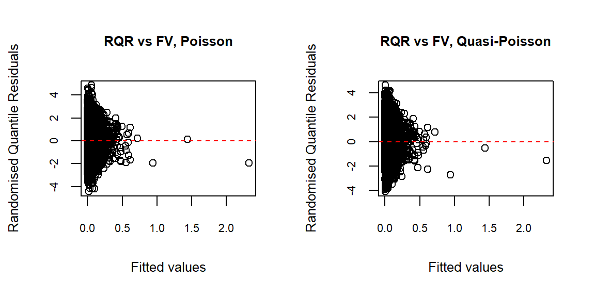
For discrete distributions such as Poisson or negative binomial, or distributions with a point mass such as Tweedie, deviance residuals often do not follow a normal distribution. This is because they account for the shape of the distribution but not its discreteness, leading to clusters of residuals around common response values. As a result, deviance residuals are often less effective for assessing model fit in these settings.
A potential solution is to use randomised quantile residuals, which add random jitter to spread the discrete points more smoothly across the distribution (Goldburd et al. 2016).
Ideally, in Figure 1, we would like to see the randomised quantile residuals display no clear pattern and approximately follow a normal distribution. However, the spread of the residuals appears to decrease as the fitted values increase.
Q–Q Plot of Randomised Quantile Residuals
A Q–Q (quantile–quantile) plot is a graphical tool used to assess whether a set of data plausibly follows a theoretical distribution, such as the normal or exponential distribution. If the two sets of quantiles come from the same distribution, the points should approximately follow a straight line.
For many response distributions, deviance residuals are approximately normally distributed. Therefore, Q-Q plots of the randomised quantile residuals can be used as a diagnostic tool.
par(mfrow = c(1, 2))
set.seed(409)
qqnorm(
qresiduals(freqPoisson_full)[sample_indices],
main = "Q-Q Plot, Poisson",
cex.main = 0.8,
cex.lab = 0.8,
cex.axis = 0.7
)
qqline(
qresiduals(freqPoisson_full)[sample_indices],
col = "red"
)
qqnorm(
qres.pois(freqQuasipoisson_full)[sample_indices],
main = "Q-Q Plot, Quasi-Poisson",
cex.main = 0.8,
cex.lab = 0.8,
cex.axis = 0.7
)
qqline(
qres.pois(freqQuasipoisson_full)[sample_indices],
col = "red"
)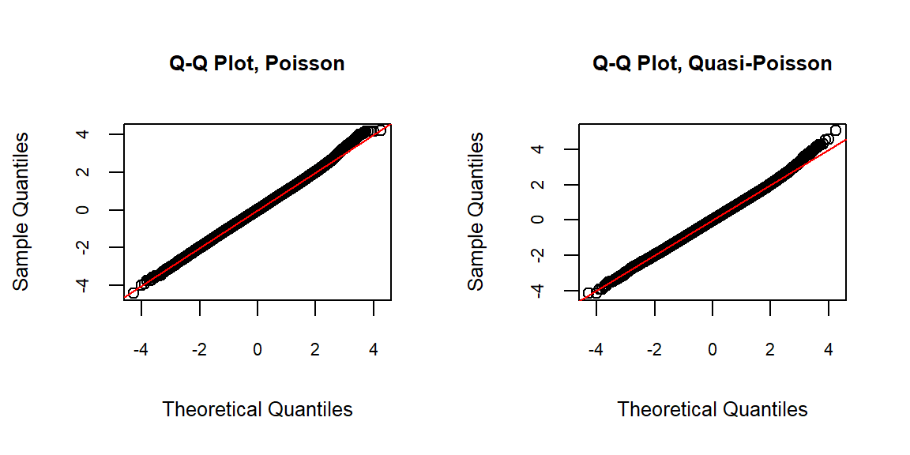
- The fit appears reasonably good overall. The sample quantiles deviate slightly from the theoretical quantiles in the upper tail.
Task: Negative Binomial GLM Fitting
Task: Negative Binomial GLM Fitting
Fit a Negative Binomial GLM using all available training data except IDpol. Perform diagnostic checks and comment on the results.
Task Solution
freqNb_full <- glm.nb(
ClaimNb ~ offset(log(Exposure)) + VehPower + VehAge +
DrivAge + BonusMalus + VehBrand + VehGas +
Density + Region + Area,
data = freMTPL2full,
subset = train_indices
)
summary(freqNb_full)
Call:
glm.nb(formula = ClaimNb ~ offset(log(Exposure)) + VehPower +
VehAge + DrivAge + BonusMalus + VehBrand + VehGas + Density +
Region + Area, data = freMTPL2full, subset = train_indices,
init.theta = 1.167540117, link = log)
Deviance Residuals:
Min 1Q Median 3Q Max
-1.7711 -0.3232 -0.2461 -0.1398 5.7149
Coefficients:
Estimate Std. Error z value Pr(>|z|)
(Intercept) -4.704e+00 1.393e-01 -33.760 < 2e-16 ***
VehPower 3.761e-02 4.028e-03 9.338 < 2e-16 ***
VehAge -1.888e-02 1.579e-03 -11.956 < 2e-16 ***
DrivAge 5.529e-03 5.733e-04 9.645 < 2e-16 ***
BonusMalus 2.645e-02 4.314e-04 61.296 < 2e-16 ***
VehBrandB10 -5.193e-02 4.919e-02 -1.056 0.291052
VehBrandB11 1.417e-01 5.148e-02 2.753 0.005909 **
VehBrandB12 -3.142e-01 2.693e-02 -11.665 < 2e-16 ***
VehBrandB13 7.614e-02 5.433e-02 1.402 0.161065
VehBrandB14 -1.465e-01 1.058e-01 -1.385 0.165950
VehBrandB2 6.311e-04 2.104e-02 0.030 0.976071
VehBrandB3 3.858e-02 2.946e-02 1.309 0.190414
VehBrandB4 2.719e-02 4.004e-02 0.679 0.497094
VehBrandB5 8.622e-02 3.379e-02 2.551 0.010731 *
VehBrandB6 -1.302e-03 3.844e-02 -0.034 0.972989
VehGasRegular -1.627e-01 1.562e-02 -10.413 < 2e-16 ***
Density -5.023e-07 5.260e-06 -0.096 0.923918
RegionAquitaine 8.001e-02 1.308e-01 0.612 0.540777
RegionAuvergne -1.750e-02 1.609e-01 -0.109 0.913396
RegionBasse-Normandie 6.718e-04 1.379e-01 0.005 0.996113
RegionBourgogne 1.121e-02 1.420e-01 0.079 0.937076
RegionBretagne 5.545e-03 1.288e-01 0.043 0.965656
RegionCentre -1.098e-02 1.268e-01 -0.087 0.930991
RegionChampagne-Ardenne -3.996e-02 1.882e-01 -0.212 0.831862
RegionCorse 6.835e-03 1.690e-01 0.040 0.967747
RegionFranche-Comte -1.152e-01 2.391e-01 -0.482 0.630046
RegionHaute-Normandie -7.633e-02 1.511e-01 -0.505 0.613474
RegionIle-de-France -1.406e-02 1.288e-01 -0.109 0.913121
RegionLanguedoc-Roussillon 6.678e-04 1.313e-01 0.005 0.995943
RegionLimousin 2.609e-01 1.559e-01 1.674 0.094074 .
RegionMidi-Pyrenees -2.473e-01 1.405e-01 -1.760 0.078398 .
RegionNord-Pas-de-Calais -7.751e-02 1.299e-01 -0.597 0.550596
RegionPays-de-la-Loire 1.409e-02 1.293e-01 0.109 0.913226
RegionPicardie 2.643e-02 1.447e-01 0.183 0.855064
RegionPoitou-Charentes 6.626e-02 1.329e-01 0.498 0.618139
RegionProvence-Alpes-Cotes-D'Azur 1.207e-01 1.273e-01 0.948 0.343371
RegionRhone-Alpes 2.119e-01 1.269e-01 1.670 0.094856 .
AreaB 1.041e-01 3.206e-02 3.248 0.001162 **
AreaC 1.514e-01 2.665e-02 5.683 1.33e-08 ***
AreaD 2.996e-01 2.828e-02 10.593 < 2e-16 ***
AreaE 4.048e-01 3.682e-02 10.995 < 2e-16 ***
AreaF 4.716e-01 1.278e-01 3.692 0.000223 ***
---
Signif. codes: 0 '***' 0.001 '**' 0.01 '*' 0.05 '.' 0.1 ' ' 1
(Dispersion parameter for Negative Binomial(1.1675) family taken to be 1)
Null deviance: 107133 on 474603 degrees of freedom
Residual deviance: 102425 on 474562 degrees of freedom
AIC: 150452
Number of Fisher Scoring iterations: 1
Theta: 1.1675
Std. Err.: 0.0828
2 x log-likelihood: -150365.8100 Randomised Quantile Residuals vs Fitted Values
set.seed(742)
plot(
freqNb_full$fitted.values[sample_indices],
qresiduals(freqNb_full)[sample_indices],
xlab = "Fitted values",
ylab = "Randomised Quantile Residuals",
main = "RQR vs FV, Negative Binomial"
)
abline(h = 0, col = "red", lty = 2)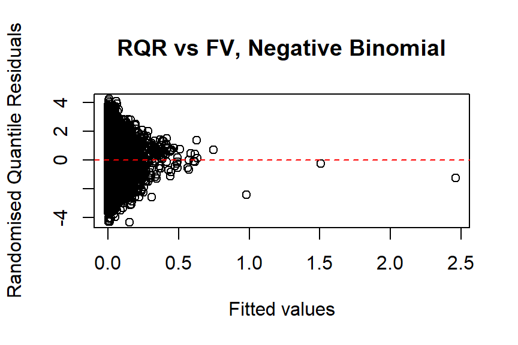
Q-Q Plot of Randomised Quantile Residuals
qqnorm(
qresiduals(freqNb_full)[sample_indices],
main = "Q-Q Plot, Negative Binomial"
)
qqline(
qresiduals(freqNb_full)[sample_indices],
col = "red"
)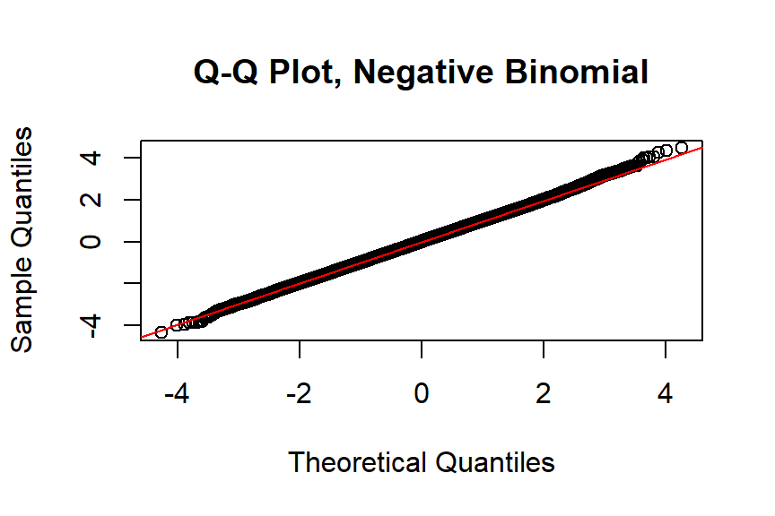
Other Distributions (Not Examinable): Zero-Inflated Models
Insurance claim data often contain an excessive number of zeros. Zero-inflated models are useful for handling a mass at zero, corresponding to policies with no claims. A binary model, usually logit or probit, is used to model the zero-inflation component (no claim vs claim). You are encouraged to explore this further on your own.
- Hint: You can use the
zeroinfl()function from thepsclpackage to implement zero-inflated regression. It allows the use of anoffset, similar to how we used it previously in theglm()function.
Feature Selection
Forward and Backward AIC/BIC Selection
Regression modelling often involves adding predictors to a model and testing whether each one is significantly different from zero. Stepwise regression automates this process in the following ways:
Forward: Start with a simple model and automatically add variables.
Backward: Start with a complex model and automatically remove variables.
Both: Iteratively add or remove variables at each step.
For more details, see Chapter 6, Section 6.1.2 of An Introduction to Statistical Learning and the previous lecture materials on filter, wrapper, and embedded methods. The stepAIC() function from the MASS package implements a wrapper method.
glm_full <- glm(
ClaimNb ~ offset(log(Exposure)) + VehPower + VehAge +
DrivAge + BonusMalus + VehBrand + VehGas +
Density + Region + Area,
data = freMTPL2full,
subset = train_indices,
family = poisson(link = "log")
)
glm_none <- glm(
ClaimNb ~ offset(log(Exposure)) + 1,
data = freMTPL2full,
subset = train_indices,
family = poisson(link = "log")
)
# AIC backward selection
aic_back <- stepAIC(
glm_full,
direction = "backward",
k = 2, # k = 2 for AIC; k = log(n) for BIC
scope = list(upper = glm_full, lower = glm_none)
)
freqPoisson_step <- glm(
ClaimNb ~ VehPower + VehAge + DrivAge + BonusMalus +
VehBrand + VehGas + Region + Area,
data = freMTPL2full,
subset = train_indices,
offset = log(Exposure),
family = poisson(link = "log")
)
summary(freqPoisson_step)Backward stepwise selection using AIC removes only Density compared with the full model.
Exercise:
Run the code above. Make sure you understand the intermediate outputs of the stepwise selection process.
So far, we have only used backward stepwise selection with AIC. Now, explore other stepwise selection methods, such as forward stepwise selection, or use a different criterion, such as BIC. Do these approaches result in a different set of selected predictors?
Regularization Methods (from the Topic of Modelling and Shrinkage Techniques)
Alternatively, we can fit Poisson lasso or ridge regression models. We leave these methods as an exercise for you to explore further.
Transformation of Variables
An Example of Transforming DrivAge
GLMs assume a linear relationship between the transformed predictors (after applying the link function) and the expected response. However, the relationship between predictors and the response variable may not always be linear. Applying transformations, such as logarithms, polynomials, or splines, can help capture more complex non-linear relationships.
In many cases, predictor transformations are introduced to improve the model fit. In this subsection, we explore several possible transformations of DrivAge, as previewed earlier in the previous EDA lab.
Here, we consider two transformations discussed in Schelldorfer and Wuthrich (2019). First, we add polynomial terms to DrivAge by including a logarithmic transformation and polynomial terms up to the fourth degree. Second, we apply a binning approach to the continuous DrivAge variable by dividing it into age brackets (e.g., “18–20”, “21–25”, etc.) and treating the resulting age groups as categorical levels.
# Adding polynomial terms
freqPoisson_age1 <- glm(
ClaimNb ~ VehPower + VehAge + BonusMalus +
VehBrand + VehGas + Density + Region + Area +
DrivAge + log(DrivAge) +
I(DrivAge^2) + I(DrivAge^3) + I(DrivAge^4),
data = freMTPL2full,
subset = train_indices,
offset = log(Exposure),
family = poisson(link = "log")
)
summary(freqPoisson_age1)
# Binning continuous predictors
freMTPL2full$DrivAgeBins <- as.factor(
cut(
freMTPL2full$DrivAge,
c(18, 20, 25, 30, 40, 50, 70, 101),
labels = c(
"18-20", "21-25", "26-30",
"31-40", "41-50", "51-70", "71+"
),
include.lowest = TRUE
)
)
freqPoisson_age2 <- glm(
ClaimNb ~ VehPower + VehAge + BonusMalus +
VehBrand + VehGas + Density + Region + Area +
DrivAgeBins,
data = freMTPL2full,
subset = train_indices,
offset = log(Exposure),
family = poisson(link = "log")
)
summary(freqPoisson_age2)
Exercise
What are the limitations of these two transformations?
Hint: Refer to Sections 5.4.2 and 5.4.3 of Generalized Linear Models for Insurance Rating for further discussion of the limitations of polynomial terms and binning continuous predictors.
Poisson GLM with Pre-processed Data Following Wüthrich and Merz (2023)
Lastly, we present an example of a Poisson frequency model following the feature engineering steps in Wüthrich and Merz (2023).
freMTPL2prep <- freMTPL2full
freMTPL2prep$AreaGLM <- as.integer(freMTPL2prep$Area)
freMTPL2prep$VehPowerGLM <- as.factor(
pmin(freMTPL2prep$VehPower, 9)
)
freMTPL2prep$VehAgeGLM <- as.factor(
cut(
freMTPL2prep$VehAge,
c(0, 5, 12, 101),
labels = c("0-5", "6-12", "12+"),
include.lowest = TRUE
)
)
freMTPL2prep$DrivAgeGLM <- as.factor(
cut(
freMTPL2prep$DrivAge,
c(18, 20, 25, 30, 40, 50, 70, 101),
labels = c(
"18-20", "21-25", "26-30",
"31-40", "41-50", "51-70", "71+"
),
include.lowest = TRUE
)
)
freMTPL2prep$BonusMalusGLM <- pmin(
freMTPL2prep$BonusMalus,
150
)
freMTPL2prep$DensityGLM <- log(
freMTPL2prep$Density
)freqPoisson_full2 <- glm(
ClaimNb ~ VehPowerGLM + VehAgeGLM + DrivAgeGLM +
BonusMalusGLM + VehBrand + VehGas +
DensityGLM + Region + AreaGLM,
data = freMTPL2prep,
subset = train_indices,
offset = log(Exposure),
family = poisson(link = "log")
)
summary(freqPoisson_full2)
Call:
glm(formula = ClaimNb ~ VehPowerGLM + VehAgeGLM + DrivAgeGLM +
BonusMalusGLM + VehBrand + VehGas + DensityGLM + Region +
AreaGLM, family = poisson(link = "log"), data = freMTPL2prep,
subset = train_indices, offset = log(Exposure))
Deviance Residuals:
Min 1Q Median 3Q Max
-1.4965 -0.3263 -0.2457 -0.1384 6.3663
Coefficients:
Estimate Std. Error z value Pr(>|z|)
(Intercept) -4.3902492 0.1442319 -30.439 < 2e-16 ***
VehPowerGLM5 0.0730051 0.0261232 2.795 0.005196 **
VehPowerGLM6 0.1096382 0.0255980 4.283 1.84e-05 ***
VehPowerGLM7 0.0929838 0.0254440 3.654 0.000258 ***
VehPowerGLM8 0.1393255 0.0359724 3.873 0.000107 ***
VehPowerGLM9 0.2578063 0.0285490 9.030 < 2e-16 ***
VehAgeGLM6-12 -0.0354264 0.0174740 -2.027 0.042623 *
VehAgeGLM12+ -0.2932947 0.0226510 -12.948 < 2e-16 ***
DrivAgeGLM21-25 -0.4704740 0.0560478 -8.394 < 2e-16 ***
DrivAgeGLM26-30 -0.5668809 0.0547323 -10.357 < 2e-16 ***
DrivAgeGLM31-40 -0.3952612 0.0527897 -7.487 7.02e-14 ***
DrivAgeGLM41-50 -0.1223895 0.0535093 -2.287 0.022181 *
DrivAgeGLM51-70 -0.1851709 0.0535873 -3.455 0.000549 ***
DrivAgeGLM71+ -0.2040892 0.0599282 -3.406 0.000660 ***
BonusMalusGLM 0.0273194 0.0004379 62.386 < 2e-16 ***
VehBrandB10 -0.0363004 0.0480897 -0.755 0.450341
VehBrandB11 0.1816102 0.0497203 3.653 0.000260 ***
VehBrandB12 -0.2701251 0.0266707 -10.128 < 2e-16 ***
VehBrandB13 0.0708641 0.0527654 1.343 0.179271
VehBrandB14 -0.1379026 0.1034080 -1.334 0.182342
VehBrandB2 0.0069530 0.0205377 0.339 0.734949
VehBrandB3 0.0434720 0.0286898 1.515 0.129711
VehBrandB4 0.0251924 0.0390694 0.645 0.519049
VehBrandB5 0.0737139 0.0330941 2.227 0.025920 *
VehBrandB6 -0.0064650 0.0375096 -0.172 0.863158
VehGasRegular -0.1529144 0.0159270 -9.601 < 2e-16 ***
DensityGLM 0.0530373 0.0169028 3.138 0.001702 **
RegionAquitaine 0.0783005 0.1266686 0.618 0.536475
RegionAuvergne -0.0207106 0.1565428 -0.132 0.894747
RegionBasse-Normandie -0.0080679 0.1335590 -0.060 0.951831
RegionBourgogne 0.0115694 0.1375741 0.084 0.932980
RegionBretagne -0.0108365 0.1245820 -0.087 0.930685
RegionCentre -0.0172560 0.1226777 -0.141 0.888138
RegionChampagne-Ardenne -0.0280496 0.1835825 -0.153 0.878564
RegionCorse 0.0038359 0.1644847 0.023 0.981394
RegionFranche-Comte -0.1430258 0.2340928 -0.611 0.541213
RegionHaute-Normandie -0.0867885 0.1469157 -0.591 0.554697
RegionIle-de-France -0.0476711 0.1238943 -0.385 0.700406
RegionLanguedoc-Roussillon -0.0235679 0.1271251 -0.185 0.852922
RegionLimousin 0.2511484 0.1510084 1.663 0.096284 .
RegionMidi-Pyrenees -0.2428027 0.1364165 -1.780 0.075098 .
RegionNord-Pas-de-Calais -0.0812544 0.1256010 -0.647 0.517680
RegionPays-de-la-Loire -0.0027133 0.1251385 -0.022 0.982701
RegionPicardie 0.0433285 0.1401706 0.309 0.757236
RegionPoitou-Charentes 0.0578487 0.1286153 0.450 0.652869
RegionProvence-Alpes-Cotes-D'Azur 0.1083850 0.1232660 0.879 0.379251
RegionRhone-Alpes 0.1912720 0.1227259 1.559 0.119108
AreaGLM 0.0336461 0.0227506 1.479 0.139164
---
Signif. codes: 0 '***' 0.001 '**' 0.01 '*' 0.05 '.' 0.1 ' ' 1
(Dispersion parameter for poisson family taken to be 1)
Null deviance: 120058 on 474603 degrees of freedom
Residual deviance: 114732 on 474556 degrees of freedom
AIC: 150433
Number of Fisher Scoring iterations: 6Model Comparison
# Function for Poisson deviance
compute_poisson_deviance <- function(model, test_data) {
# Predict on the test set
predicted_values <- predict(
model,
newdata = test_data,
type = "response"
)
# Observed values
observed_values <- test_data$ClaimNb
# Compute the Poisson deviance
deviance <- 2 * sum(
observed_values * log(observed_values / predicted_values) -
(observed_values - predicted_values),
na.rm = TRUE
)
return(deviance)
}# Compute AIC and Poisson deviance
dev_poisson_full <- compute_poisson_deviance(
freqPoisson_full,
test_data = freMTPL2full[-train_indices, ]
)
print(dev_poisson_full)[1] 34015.79aic_poisson_full <- AIC(freqPoisson_full)
print(aic_poisson_full)[1] 150765dev_poisson_full2 <- compute_poisson_deviance(
freqPoisson_full2,
test_data = freMTPL2prep[-train_indices, ]
)
print(dev_poisson_full2)[1] 33857.75aic_poisson_full2 <- AIC(freqPoisson_full2)
print(aic_poisson_full2)[1] 150433.5In the code above, two Poisson regression models are compared: freqPoisson_full, which uses the original data, and freqPoisson_full2, which uses pre-processed data following Wüthrich and Merz (2023).
AIC is used as an in-sample measure on the training data to evaluate model fit, while Poisson deviance is computed on the test data as an out-of-sample measure of predictive performance.
The results suggest that freqPoisson_full2 performs better than freqPoisson_full on both measures.
Modeling Claim Severity Using GLMs
For insurance analysts, one strength of the GLM approach is that the same set of modelling techniques can be used for both continuous and discrete outcomes. For claim severity modelling, it is common to use a Gamma or inverse Gaussian distribution, often with a logarithmic link (primarily for parameter interpretability).
Gamma GLM for Claim Severities
Task: Gamma Severity Model
Task: Gamma Severity Model
Fit a Gamma GLM using all available training data except IDpol. Model the total claim amount per policy as the response variable, include an offset for claim count, and use claim count as the GLM weight.
Task Solution
# Total claim amount model
sevGamma_full <- glm(
ClaimTotal ~ offset(log(ClaimNb)) + VehPower + VehAge +
DrivAge + BonusMalus + VehBrand + VehGas +
Density + Region + Area,
family = Gamma(link = "log"),
weights = ClaimNb,
data = filter(
freMTPL2full[train_indices, ],
ClaimNb > 0
)
)
summary(sevGamma_full)
Call:
glm(formula = ClaimTotal ~ offset(log(ClaimNb)) + VehPower +
VehAge + DrivAge + BonusMalus + VehBrand + VehGas + Density +
Region + Area, family = Gamma(link = "log"), data = filter(freMTPL2full[train_indices,
], ClaimNb > 0), weights = ClaimNb)
Deviance Residuals:
Min 1Q Median 3Q Max
-3.579 -1.035 -0.612 -0.262 34.796
Coefficients:
Estimate Std. Error t value Pr(>|t|)
(Intercept) 6.354e+00 9.058e-01 7.015 2.39e-12 ***
VehPower 3.088e-02 2.630e-02 1.174 0.24043
VehAge 2.027e-03 1.055e-02 0.192 0.84758
DrivAge -3.481e-03 3.861e-03 -0.902 0.36727
BonusMalus 9.157e-03 2.836e-03 3.229 0.00124 **
VehBrandB10 2.505e-01 3.208e-01 0.781 0.43497
VehBrandB11 6.265e-01 3.325e-01 1.884 0.05957 .
VehBrandB12 1.607e-01 1.754e-01 0.916 0.35951
VehBrandB13 -8.543e-02 3.551e-01 -0.241 0.80988
VehBrandB14 4.943e-03 6.936e-01 0.007 0.99431
VehBrandB2 1.625e-01 1.375e-01 1.182 0.23714
VehBrandB3 1.304e-01 1.921e-01 0.679 0.49721
VehBrandB4 1.746e-01 2.615e-01 0.668 0.50421
VehBrandB5 -1.192e-01 2.202e-01 -0.541 0.58820
VehBrandB6 -2.537e-01 2.510e-01 -1.011 0.31208
VehGasRegular 1.796e-01 1.022e-01 1.758 0.07875 .
Density 1.305e-05 3.436e-05 0.380 0.70414
RegionAquitaine 3.712e-01 8.514e-01 0.436 0.66283
RegionAuvergne -2.926e-02 1.052e+00 -0.028 0.97782
RegionBasse-Normandie 4.109e-01 8.980e-01 0.458 0.64725
RegionBourgogne 1.702e-01 9.252e-01 0.184 0.85402
RegionBretagne 4.083e-01 8.381e-01 0.487 0.62613
RegionCentre 6.854e-01 8.247e-01 0.831 0.40591
RegionChampagne-Ardenne 1.946e+00 1.235e+00 1.576 0.11504
RegionCorse 9.935e-01 1.106e+00 0.898 0.36901
RegionFranche-Comte 2.298e-01 1.574e+00 0.146 0.88394
RegionHaute-Normandie 2.107e-01 9.881e-01 0.213 0.83116
RegionIle-de-France 3.585e-01 8.381e-01 0.428 0.66885
RegionLanguedoc-Roussillon 2.849e-01 8.555e-01 0.333 0.73909
RegionLimousin -8.483e-02 1.016e+00 -0.083 0.93347
RegionMidi-Pyrenees 1.717e-01 9.170e-01 0.187 0.85150
RegionNord-Pas-de-Calais 2.953e-01 8.454e-01 0.349 0.72690
RegionPays-de-la-Loire 1.875e-01 8.414e-01 0.223 0.82366
RegionPicardie 1.394e-03 9.421e-01 0.001 0.99882
RegionPoitou-Charentes 1.328e-01 8.653e-01 0.153 0.87802
RegionProvence-Alpes-Cotes-D'Azur 6.087e-01 8.286e-01 0.735 0.46258
RegionRhone-Alpes 5.520e-01 8.255e-01 0.669 0.50375
AreaB 2.660e-01 2.105e-01 1.263 0.20647
AreaC 1.949e-02 1.748e-01 0.112 0.91121
AreaD 1.609e-02 1.852e-01 0.087 0.93074
AreaE -9.510e-02 2.401e-01 -0.396 0.69207
AreaF -4.909e-01 8.403e-01 -0.584 0.55911
---
Signif. codes: 0 '***' 0.001 '**' 0.01 '*' 0.05 '.' 0.1 ' ' 1
(Dispersion parameter for Gamma family taken to be 45.14967)
Null deviance: 33593 on 17500 degrees of freedom
Residual deviance: 30042 on 17459 degrees of freedom
AIC: 323412
Number of Fisher Scoring iterations: 16Here, we model the total claim amount as the response variable. Since policies with more claims are expected to have more stable experience, the claim count is used as the GLM weight. We also restrict the analysis to observations with positive claim counts (Frees et al. 2014).
Alternatively, we can model the average claim amount as the response variable. The two approaches should produce equivalent fitted results, as shown below:
# Average claim amount model
sevGamma_fullalt <- glm(
ClaimTotal / ClaimNb ~ VehPower + VehAge + DrivAge +
BonusMalus + VehBrand + VehGas +
Density + Region + Area,
family = Gamma(link = "log"),
weights = ClaimNb,
data = filter(
freMTPL2full[train_indices, ],
ClaimNb > 0
)
)
summary(sevGamma_fullalt)Note that the main difference between these two equivalent models is that the first model predicts the total claim amount, while the second model predicts the average claim severity.
Modelling Individual Claim Sizes
In fact, if we do not merge the frequency and severity data, we can model individual claim amounts directly. This is generally a more desirable approach than modelling average or total claim amounts (you may wish to think about why this is the case).
freq_data2 <- freMTPL2freq[, -2]
freq_data2$VehGas <- factor(freq_data2$VehGas)
sev_data2 <- freMTPL2sev
sev_data2$ClaimNb <- 1
merged_data2 <- merge(
x = sev_data2,
y = freq_data2,
by = "IDpol",
all.x = TRUE
)
merged_data2 <- merged_data2[
merged_data2$ClaimNb <= 5,
]
merged_data2$Exposure <- pmin(
merged_data2$Exposure,
1
)
freMTPL2full2 <- merged_data2Note that freMTPL2full2 only contains records for policies with positive claim counts, and a policy may appear in multiple rows if it has multiple claims.
# Extract IDpol values from freMTPL2full based on train_indices
train_IDpols <- freMTPL2full[
train_indices,
"IDpol"
]
# Find matching rows in freMTPL2full2
train_indices2 <- which(
freMTPL2full2$IDpol %in% train_IDpols
)If the severity and frequency data are stored separately, note that the severity dataset has a different structure from the merged dataset freMTPL2full used earlier. In freMTPL2full, each row represents a policy, whereas in freMTPL2full2, each row represents an individual claim.
To ensure a fair comparison across different models on the test set, we filter the training data in freMTPL2full2 by retaining only rows whose IDpol values appear in freMTPL2full[train_indices, ].
# Individual claim amount model
sevGamma_fullalt2 <- glm(
ClaimAmount ~ VehPower + VehAge + DrivAge +
BonusMalus + VehBrand + VehGas +
Density + Region + Area,
family = Gamma(link = "log"),
data = freMTPL2full2[train_indices2, ]
)
summary(sevGamma_fullalt2)
Call:
glm(formula = ClaimAmount ~ VehPower + VehAge + DrivAge + BonusMalus +
VehBrand + VehGas + Density + Region + Area, family = Gamma(link = "log"),
data = freMTPL2full2[train_indices2, ])
Deviance Residuals:
Min 1Q Median 3Q Max
-3.579 -1.020 -0.606 -0.261 34.795
Coefficients:
Estimate Std. Error t value Pr(>|t|)
(Intercept) 6.354e+00 9.309e-01 6.825 9.05e-12 ***
VehPower 3.088e-02 2.703e-02 1.142 0.25336
VehAge 2.027e-03 1.084e-02 0.187 0.85164
DrivAge -3.481e-03 3.968e-03 -0.877 0.38034
BonusMalus 9.158e-03 2.915e-03 3.142 0.00168 **
VehBrandB10 2.505e-01 3.297e-01 0.760 0.44748
VehBrandB11 6.265e-01 3.418e-01 1.833 0.06679 .
VehBrandB12 1.607e-01 1.803e-01 0.892 0.37263
VehBrandB13 -8.543e-02 3.649e-01 -0.234 0.81492
VehBrandB14 4.939e-03 7.128e-01 0.007 0.99447
VehBrandB2 1.625e-01 1.413e-01 1.150 0.25004
VehBrandB3 1.304e-01 1.974e-01 0.661 0.50891
VehBrandB4 1.746e-01 2.687e-01 0.650 0.51581
VehBrandB5 -1.192e-01 2.263e-01 -0.527 0.59832
VehBrandB6 -2.537e-01 2.579e-01 -0.984 0.32533
VehGasRegular 1.796e-01 1.050e-01 1.711 0.08717 .
Density 1.305e-05 3.531e-05 0.369 0.71179
RegionAquitaine 3.712e-01 8.751e-01 0.424 0.67140
RegionAuvergne -2.926e-02 1.081e+00 -0.027 0.97842
RegionBasse-Normandie 4.109e-01 9.230e-01 0.445 0.65616
RegionBourgogne 1.702e-01 9.509e-01 0.179 0.85793
RegionBretagne 4.083e-01 8.614e-01 0.474 0.63549
RegionCentre 6.854e-01 8.476e-01 0.809 0.41871
RegionChampagne-Ardenne 1.946e+00 1.269e+00 1.533 0.12519
RegionCorse 9.935e-01 1.137e+00 0.874 0.38209
RegionFranche-Comte 2.298e-01 1.618e+00 0.142 0.88706
RegionHaute-Normandie 2.107e-01 1.016e+00 0.207 0.83566
RegionIle-de-France 3.585e-01 8.614e-01 0.416 0.67728
RegionLanguedoc-Roussillon 2.849e-01 8.792e-01 0.324 0.74590
RegionLimousin -8.483e-02 1.044e+00 -0.081 0.93527
RegionMidi-Pyrenees 1.717e-01 9.424e-01 0.182 0.85547
RegionNord-Pas-de-Calais 2.953e-01 8.689e-01 0.340 0.73399
RegionPays-de-la-Loire 1.875e-01 8.648e-01 0.217 0.82835
RegionPicardie 1.391e-03 9.682e-01 0.001 0.99885
RegionPoitou-Charentes 1.328e-01 8.893e-01 0.149 0.88129
RegionProvence-Alpes-Cotes-D'Azur 6.087e-01 8.516e-01 0.715 0.47476
RegionRhone-Alpes 5.520e-01 8.485e-01 0.651 0.51535
AreaB 2.660e-01 2.164e-01 1.229 0.21898
AreaC 1.949e-02 1.796e-01 0.109 0.91359
AreaD 1.609e-02 1.903e-01 0.085 0.93261
AreaE -9.510e-02 2.468e-01 -0.385 0.69999
AreaF -4.909e-01 8.636e-01 -0.568 0.56979
---
Signif. codes: 0 '***' 0.001 '**' 0.01 '*' 0.05 '.' 0.1 ' ' 1
(Dispersion parameter for Gamma family taken to be 47.69241)
Null deviance: 34585 on 18504 degrees of freedom
Residual deviance: 31034 on 18463 degrees of freedom
AIC: 320320
Number of Fisher Scoring iterations: 16The fitted model for individual claim amounts is shown above.
plot(
sevGamma_full$fitted.values,
rstandard(sevGamma_full),
xlab = "Fitted values",
ylab = "Standardised deviance residuals",
main = "SDR vs FV, Gamma"
)
abline(h = 0, col = "red", lty = 2)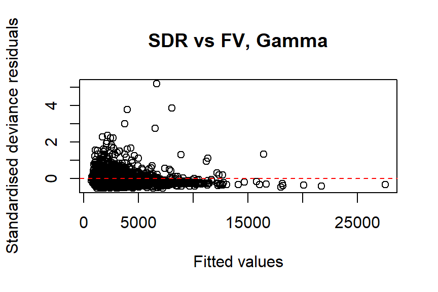
qqnorm(
rstandard(sevGamma_full),
main = "Q-Q Plot, Gamma"
)
qqline(
rstandard(sevGamma_full),
col = "red"
)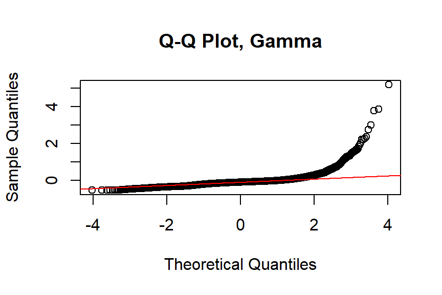
The residual analysis suggests that the Gamma distribution does not fit the data well. Note that we use standardised deviance residuals here because the response is continuous.
In fact, if we plot the empirical distribution of claim amounts, as shown below, the French MTPL data appears to have three distinct modes with heavy tails, along with many fixed-size payments, as pointed out in Wüthrich and Merz (2023). This further confirms the unsuitability of the Gamma distribution.
# Create the density plot
ggplot(
filter(freMTPL2full[train_indices, ], ClaimNb > 0),
aes(x = ClaimTotal)
) +
geom_density(linewidth = 0.8) +
labs(
title = "Empirical Density of Claim Amounts",
x = "Claim Total",
y = "Density"
) +
xlim(0, 10000) +
theme_minimal()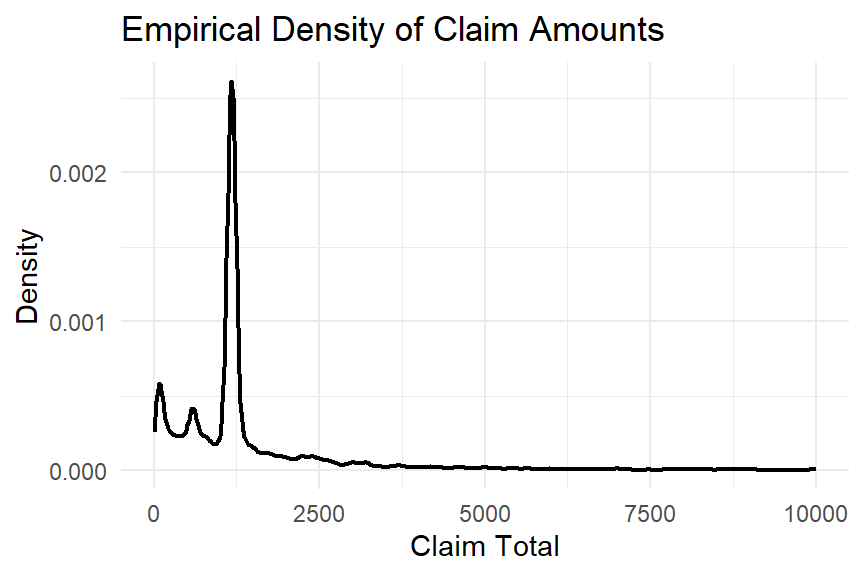
Note: We do not show the fit of the inverse Gaussian GLM here, as the model encountered convergence issues with this dataset. You are welcome to explore this further by setting family = inverse.gaussian(link = "log") in glm().
Gamma GLM with Pre-processed Data
Here, we fit a Gamma GLM corresponding to Section 3.5.2 using the same pre-processed data, following the steps in Wüthrich and Merz (2023). In this model, no predictors are dropped compared with the full model. You are encouraged to try it yourself.
It is also important to note that feature engineering can be conducted separately or jointly with the frequency model. The set of predictors used in the severity model can differ from those used in the frequency model. This is a major advantage of the frequency-severity approach over pure premium modelling. However, for simplicity, we use the same predictors as in our frequency model.
sevGamma_full2 <- glm(
ClaimTotal ~ offset(log(ClaimNb)) + VehPowerGLM +
VehAgeGLM + DrivAgeGLM + BonusMalusGLM +
VehBrand + VehGas + DensityGLM + Region + AreaGLM,
family = Gamma(link = "log"),
weights = ClaimNb,
data = filter(
freMTPL2prep[train_indices, ],
ClaimNb > 0
)
)
summary(sevGamma_full2)
Call:
glm(formula = ClaimTotal ~ offset(log(ClaimNb)) + VehPowerGLM +
VehAgeGLM + DrivAgeGLM + BonusMalusGLM + VehBrand + VehGas +
DensityGLM + Region + AreaGLM, family = Gamma(link = "log"),
data = filter(freMTPL2prep[train_indices, ], ClaimNb > 0),
weights = ClaimNb)
Deviance Residuals:
Min 1Q Median 3Q Max
-3.5765 -0.9680 -0.5169 -0.2253 19.9152
Coefficients:
Estimate Std. Error t value Pr(>|t|)
(Intercept) 8.941565 0.575180 15.546 < 2e-16 ***
VehPowerGLM5 -0.260472 0.104156 -2.501 0.012401 *
VehPowerGLM6 -0.033803 0.101583 -0.333 0.739316
VehPowerGLM7 -0.026562 0.100980 -0.263 0.792525
VehPowerGLM8 -0.173287 0.143499 -1.208 0.227222
VehPowerGLM9 0.024711 0.113047 0.219 0.826969
VehAgeGLM6-12 -0.105864 0.068883 -1.537 0.124342
VehAgeGLM12+ -0.006002 0.090110 -0.067 0.946898
DrivAgeGLM21-25 -1.802384 0.223301 -8.072 7.39e-16 ***
DrivAgeGLM26-30 -2.042690 0.217990 -9.371 < 2e-16 ***
DrivAgeGLM31-40 -1.988743 0.211609 -9.398 < 2e-16 ***
DrivAgeGLM41-50 -2.082229 0.214648 -9.701 < 2e-16 ***
DrivAgeGLM51-70 -2.035312 0.214668 -9.481 < 2e-16 ***
DrivAgeGLM71+ -1.611195 0.239446 -6.729 1.76e-11 ***
BonusMalusGLM 0.002640 0.001857 1.421 0.155281
VehBrandB10 0.148839 0.191361 0.778 0.436701
VehBrandB11 0.695214 0.197379 3.522 0.000429 ***
VehBrandB12 0.113642 0.105204 1.080 0.280064
VehBrandB13 0.003662 0.211016 0.017 0.986156
VehBrandB14 -0.005588 0.411589 -0.014 0.989168
VehBrandB2 0.042247 0.081839 0.516 0.605703
VehBrandB3 0.156159 0.114159 1.368 0.171361
VehBrandB4 0.226975 0.155523 1.459 0.144464
VehBrandB5 -0.022168 0.131782 -0.168 0.866415
VehBrandB6 -0.200535 0.149267 -1.343 0.179140
VehGasRegular -0.006849 0.063666 -0.108 0.914332
DensityGLM 0.142411 0.067335 2.115 0.034448 *
RegionAquitaine 0.272577 0.504563 0.540 0.589050
RegionAuvergne -0.133827 0.623600 -0.215 0.830078
RegionBasse-Normandie 0.297633 0.532082 0.559 0.575914
RegionBourgogne 0.164838 0.548242 0.301 0.763672
RegionBretagne 0.343233 0.496370 0.691 0.489269
RegionCentre 0.388542 0.488639 0.795 0.426536
RegionChampagne-Ardenne 1.572786 0.731790 2.149 0.031630 *
RegionCorse 1.077408 0.655033 1.645 0.100026
RegionFranche-Comte 0.021170 0.932892 0.023 0.981895
RegionHaute-Normandie 0.094126 0.585420 0.161 0.872266
RegionIle-de-France 0.225874 0.493445 0.458 0.647138
RegionLanguedoc-Roussillon 0.208207 0.506359 0.411 0.680942
RegionLimousin -0.121840 0.601754 -0.202 0.839549
RegionMidi-Pyrenees 0.049492 0.543356 0.091 0.927425
RegionNord-Pas-de-Calais 0.196336 0.500484 0.392 0.694846
RegionPays-de-la-Loire 0.092302 0.498559 0.185 0.853124
RegionPicardie -0.028648 0.558349 -0.051 0.959080
RegionPoitou-Charentes 0.064831 0.512276 0.127 0.899294
RegionProvence-Alpes-Cotes-D'Azur 0.472696 0.491071 0.963 0.335771
RegionRhone-Alpes 0.314501 0.488983 0.643 0.520120
AreaGLM -0.197204 0.090341 -2.183 0.029058 *
---
Signif. codes: 0 '***' 0.001 '**' 0.01 '*' 0.05 '.' 0.1 ' ' 1
(Dispersion parameter for Gamma family taken to be 15.8451)
Null deviance: 33593 on 17500 degrees of freedom
Residual deviance: 27479 on 17453 degrees of freedom
AIC: 321406
Number of Fisher Scoring iterations: 22Modeling Aggregate Loss Using GLMs
The Tweedie distribution can be defined as a Poisson sum of Gamma random variables. Specifically, suppose that N follows a Poisson distribution with mean \lambda, representing the number of claims. Let y_j be an i.i.d. sequence, independent of N, where each y_j follows a Gamma distribution with parameters \alpha and \beta, representing individual claim amounts.
Then,
S = y_1 + \cdots + y_N
is a Poisson sum of Gamma random variables.
Model Validation and Evaluation
In this section, we summarise both quantitative measures and visual techniques that can be used for model evaluation and comparison.
Measures of Model Performance
In Section 3.6, we used AIC and Poisson deviance to compare claim frequency models. Other deviance loss functions, such as Gamma or Tweedie deviance loss, can also be explored. However, it is important to use the appropriate deviance loss function for the corresponding model. Models are comparable when the same deviance loss function is used; see the related discussion in Section 6.1.3 of Goldburd et al. (2016).
In addition to these metrics, we use RMSE (Selvakumar et al. 2021) and Spearman correlation (Frees, Lee, and Yang 2016; Lee and Shi 2019) in this section to evaluate predictive performance. Other measures, such as the Gini index, will be explored in the next section.
freMTPL2fulltest <- freMTPL2full[-train_indices, ]
freMTPL2fulltest2 <- freMTPL2prep[-train_indices, ]
# Save actual claim counts
freMTPL2fulltest$AClaimNb <- freMTPL2full[-train_indices, ]$ClaimNb
freMTPL2fulltest2$AClaimNb <- freMTPL2prep[-train_indices, ]$ClaimNb
# Predict claim counts
freMTPL2fulltest$ClaimNb <- predict(
freqPoisson_full,
newdata = freMTPL2fulltest,
type = "response"
)
freMTPL2fulltest2$ClaimNb <- predict(
freqPoisson_full2,
newdata = freMTPL2fulltest2,
type = "response"
)
# Predict total claim amounts
freMTPL2fulltest$predcost <- predict(
sevGamma_full,
newdata = freMTPL2fulltest,
type = "response"
)
freMTPL2fulltest2$predcost2 <- predict(
sevGamma_full2,
newdata = freMTPL2fulltest2,
type = "response"
)
# Store predicted claim frequency for later use
freMTPL2fulltest$ClaimNb_cost <- freMTPL2fulltest$ClaimNb
freMTPL2fulltest2$ClaimNb_cost <- freMTPL2fulltest2$ClaimNb
# RMSE: claim frequency
RMSE(freMTPL2fulltest$ClaimNb, freMTPL2full[-train_indices, ]$ClaimNb)[1] 0.2022986RMSE(freMTPL2fulltest2$ClaimNb, freMTPL2prep[-train_indices, ]$ClaimNb)[1] 0.2020836# RMSE: claim severity
RMSE(
freMTPL2fulltest$predcost[freMTPL2fulltest$AClaimNb > 0] /
freMTPL2fulltest$ClaimNb[freMTPL2fulltest$AClaimNb > 0],
freMTPL2full[-train_indices, ]$ClaimTotal[freMTPL2full[-train_indices, ]$ClaimNb > 0] /
freMTPL2full[-train_indices, ]$ClaimNb[freMTPL2full[-train_indices, ]$ClaimNb > 0]
)[1] 8579.95RMSE(
freMTPL2fulltest2$predcost2[freMTPL2fulltest2$AClaimNb > 0] /
freMTPL2fulltest2$ClaimNb[freMTPL2fulltest2$AClaimNb > 0],
freMTPL2prep[-train_indices, ]$ClaimTotal[freMTPL2prep[-train_indices, ]$ClaimNb > 0] /
freMTPL2prep[-train_indices, ]$ClaimNb[freMTPL2prep[-train_indices, ]$ClaimNb > 0]
)[1] 8796.3# RMSE: aggregate loss
RMSE(freMTPL2fulltest$predcost, freMTPL2full[-train_indices, ]$ClaimTotal)[1] 1697.361RMSE(freMTPL2fulltest2$predcost2, freMTPL2prep[-train_indices, ]$ClaimTotal)[1] 1706.69# Spearman correlation: frequency
cor(freMTPL2fulltest$ClaimNb, freMTPL2full[-train_indices, ]$ClaimNb, method = "spearman")[1] 0.1247832cor(freMTPL2fulltest2$ClaimNb, freMTPL2prep[-train_indices, ]$ClaimNb, method = "spearman")[1] 0.1271853# Spearman correlation: severity
cor(
freMTPL2fulltest$predcost[freMTPL2fulltest$AClaimNb > 0] /
freMTPL2fulltest$ClaimNb[freMTPL2fulltest$AClaimNb > 0],
freMTPL2full[-train_indices, ]$ClaimTotal[freMTPL2full[-train_indices, ]$ClaimNb > 0] /
freMTPL2full[-train_indices, ]$ClaimNb[freMTPL2full[-train_indices, ]$ClaimNb > 0],
method = "spearman"
)[1] 0.01733511cor(
freMTPL2fulltest2$predcost2[freMTPL2fulltest2$AClaimNb > 0] /
freMTPL2fulltest2$ClaimNb[freMTPL2fulltest2$AClaimNb > 0],
freMTPL2prep[-train_indices, ]$ClaimTotal[freMTPL2prep[-train_indices, ]$ClaimNb > 0] /
freMTPL2prep[-train_indices, ]$ClaimNb[freMTPL2prep[-train_indices, ]$ClaimNb > 0],
method = "spearman"
)[1] 0.04168927# Spearman correlation: aggregate loss
cor(freMTPL2fulltest$predcost, freMTPL2full[-train_indices, ]$ClaimTotal, method = "spearman")[1] 0.1177166cor(freMTPL2fulltest2$predcost2, freMTPL2prep[-train_indices, ]$ClaimTotal, method = "spearman")[1] 0.1213769Note that when predicting claim counts, the predicted values are already adjusted for the actual Exposure, which is included as an offset in the Poisson frequency model.
Similarly, when modelling the total claim amount in sevGamma_full and sevGamma_full2, the predicted claim counts from freqPoisson_full and freqPoisson_full2 are used as the offset in the severity models. This is done by replacing the ClaimNb column in the test data with the predicted claim counts before calling predict() for the severity models.
If we instead modelled the average claim severity directly, the predicted total claim amount would be obtained by multiplying the frequency model prediction by the severity model prediction.
From the metrics above, freqPoisson_full2 outperforms freqPoisson_full across all measures, and the frequency-severity approach performs better on the pre-processed data than on the original data. However, it is unclear whether sevGamma_full2 outperforms sevGamma_full.
Gini Curve (Measure the Lift)
The Gini index can be used to measure the lift of an insurance rating plan by quantifying its ability to segment the population into better and worse risks. Here, lift refers to a model’s ability to charge each insured an actuarially fair premium, thereby reducing the potential for adverse selection. This is a relative concept and therefore requires two or more competing models.
Following Section 7.2 of Goldburd et al. (2016), the Gini index for a rating model is calculated as follows:
Sort the dataset based on the model-predicted loss cost. The records at the top of the dataset correspond to risks that the model considers to be better risks, while the records at the bottom correspond to risks that the model considers to be worse risks.
On the x-axis, plot the cumulative percentage of exposure.
On the y-axis, plot the cumulative percentage of losses.
In the code below, we slightly modify this procedure by using the number of policies instead of the cumulative percentage of exposure. This is achieved by assigning an exposure of 1 to all policies because the dataset contains a substantial number of policies with very small exposures.
Note that, in practice, exposure is typically preferred over policy count.
# Restore actual claim counts
freMTPL2fulltest$ClaimNb <- freMTPL2full[-train_indices, ]$ClaimNb
freMTPL2fulltest2$ClaimNb <- freMTPL2prep[-train_indices, ]$ClaimNb
# Save actual exposure
freMTPL2fulltest$AExposure <- freMTPL2fulltest$Exposure
freMTPL2fulltest2$AExposure <- freMTPL2fulltest2$Exposure
# Set exposure to 1 to compare policies rather than exposure-weighted risks
freMTPL2fulltest$Exposure <- 1
freMTPL2fulltest2$Exposure <- 1
# Predict claim counts
freMTPL2fulltest$ClaimNb <- predict(
freqPoisson_full,
newdata = freMTPL2fulltest,
type = "response"
)
freMTPL2fulltest2$ClaimNb <- predict(
freqPoisson_full2,
newdata = freMTPL2fulltest2,
type = "response"
)
# Predict total claim costs
freMTPL2fulltest$predprem <- predict(
sevGamma_full,
newdata = freMTPL2fulltest,
type = "response"
)
freMTPL2fulltest2$predprem2 <- predict(
sevGamma_full2,
newdata = freMTPL2fulltest2,
type = "response"
)
# Sort data by predicted claim cost
freMTPL2fulltest <- freMTPL2fulltest[order(freMTPL2fulltest$predprem), ]
freMTPL2fulltest2 <- freMTPL2fulltest2[order(freMTPL2fulltest2$predprem2), ]
# Compute cumulative proportions
freMTPL2fulltest$cumPredictedprem <- cumsum(freMTPL2fulltest$predprem) /
sum(freMTPL2fulltest$predprem)
freMTPL2fulltest$cumObservations <- seq_along(freMTPL2fulltest$predprem) /
nrow(freMTPL2fulltest)
freMTPL2fulltest2$cumPredictedprem <- cumsum(freMTPL2fulltest2$predprem2) /
sum(freMTPL2fulltest2$predprem2)
freMTPL2fulltest2$cumObservations <- seq_along(freMTPL2fulltest2$predprem2) /
nrow(freMTPL2fulltest2)
# Combine data for plotting
gini_data_full1 <- data.frame(
cumObservations = freMTPL2fulltest$cumObservations,
cumPredictedprem = freMTPL2fulltest$cumPredictedprem,
Model = "Model 1"
)
gini_data_full2 <- data.frame(
cumObservations = freMTPL2fulltest2$cumObservations,
cumPredictedprem = freMTPL2fulltest2$cumPredictedprem,
Model = "Model 2"
)
gini_data_combined <- rbind(gini_data_full1, gini_data_full2)
# Plot Gini curves
ggplot(
gini_data_combined,
aes(
x = cumObservations,
y = cumPredictedprem,
color = Model
)
) +
geom_line(linewidth = 1.2) +
geom_abline(
intercept = 0,
slope = 1,
linetype = "dashed",
linewidth = 1.2
) +
scale_x_continuous(limits = c(0, 1), expand = c(0, 0)) +
scale_y_continuous(limits = c(0, 1), expand = c(0, 0)) +
labs(
title = "Gini Curve Comparison for Two Models",
x = "Cumulative Proportion of Policyholders",
y = "Cumulative Proportion of Predicted Claim Costs"
) +
theme_minimal(base_size = 14) +
theme(
plot.title = element_text(hjust = 0.5, size = 10),
axis.title = element_text(size = 8),
axis.text = element_text(size = 6),
legend.title = element_blank()
)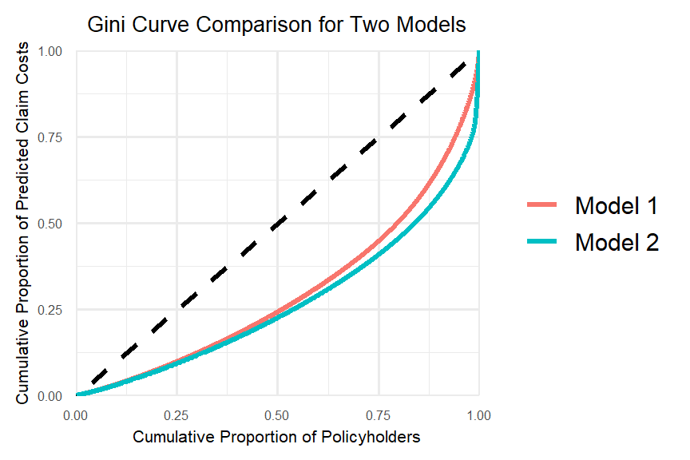
# Function to calculate the Gini index
gini_index <- function(cum_obs, cum_pred) {
# Use the trapezoidal rule to approximate the area under the Lorenz curve
auc <- sum(
(cum_obs[-1] - cum_obs[-length(cum_obs)]) *
(cum_pred[-1] + cum_pred[-length(cum_pred)]) / 2
)
# The Gini coefficient is 1 minus twice the area under the Lorenz curve
gini <- 1 - 2 * auc
return(gini)
}
# Compute the Gini index
gini_full <- gini_index(
freMTPL2fulltest$cumObservations,
freMTPL2fulltest$cumPredictedprem
)
print(gini_full)[1] 0.4053724gini_full2 <- gini_index(
freMTPL2fulltest2$cumObservations,
freMTPL2fulltest2$cumPredictedprem
)
print(gini_full2)[1] 0.4624761# Alternatively, this can be computed using the ineq package
library(ineq)
gini2_full <- ineq(freMTPL2fulltest$predprem, type = "Gini")
print(gini2_full)[1] 0.4053724gini2_full2 <- ineq(freMTPL2fulltest2$predprem2, type = "Gini")
print(gini2_full2)[1] 0.4624761Also note that the Gini index on validation data can be used to compare a model’s ranking performance, but not its calibration. The frequency-severity modelling approach performs better on the pre-processed data than on the original data, as the larger Gini index suggests that the model segments risks more effectively by showing a greater separation between lower-risk and higher-risk policyholders.
Quantile Plot
Quantile plots can be used to visualise a model’s ability to differentiate between lower-risk and higher-risk policyholders. A common choice is the decile plot, which divides predictions into ten bins with equal exposure and compares actual versus predicted outcomes. Here, we focus specifically on claim frequency predictions, although the same idea can also be applied to pure premium predictions.
The decile plot can help evaluate the following (Goldburd et al. 2016):
Predictive Accuracy (Model Calibration): This refers to how well a model predicts the insurance outcome within each quantile. A well-calibrated model will show small differences between actual and predicted values in each bin, with no substantial overestimation or underestimation in the upper or lower quantiles.
Model Fit: A model is considered to have a good fit if the ratio between the top and bottom quantiles is large, indicating a strong separation (or lift) between policyholders with the best and worst expected experience.
Monotonicity: By construction, the predicted insurance outcome should increase monotonically as the quantile increases. Ideally, the actual insurance outcome should also increase, although small reversals are generally acceptable.
Overfitting: The plot can also be used to assess overfitting by examining whether model performance deteriorates substantially between the training and test data.
# Compute in-sample predictions
freMTPL2fulltrain <- freMTPL2full[train_indices, ]
freMTPL2fulltrain2 <- freMTPL2prep[train_indices, ]
# Save actual claim counts
freMTPL2fulltrain$AClaimNb <- freMTPL2full[train_indices, ]$ClaimNb
freMTPL2fulltrain2$AClaimNb <- freMTPL2prep[train_indices, ]$ClaimNb
# Predict claim frequency
freMTPL2fulltrain$ClaimNb <- predict(
freqPoisson_full,
newdata = freMTPL2fulltrain,
type = "response"
)
freMTPL2fulltrain2$ClaimNb <- predict(
freqPoisson_full2,
newdata = freMTPL2fulltrain2,
type = "response"
)
# Predict total claim cost
freMTPL2fulltrain$predcost <- predict(
sevGamma_full,
newdata = freMTPL2fulltrain,
type = "response"
)
freMTPL2fulltrain2$predcost2 <- predict(
sevGamma_full2,
newdata = freMTPL2fulltrain2,
type = "response"
)
# Save predicted claim frequency and restore actual claim counts
freMTPL2fulltrain$ClaimNb_cost <- freMTPL2fulltrain$ClaimNb
freMTPL2fulltrain$ClaimNb <- freMTPL2fulltrain$AClaimNb
freMTPL2fulltrain2$ClaimNb_cost <- freMTPL2fulltrain2$ClaimNb
freMTPL2fulltrain2$ClaimNb <- freMTPL2fulltrain2$AClaimNbModel 1 (freqPoisson_full)
decile_fulltrain <- freMTPL2fulltrain
decile_fulltest <- freMTPL2fulltest
decile_fulltrain2 <- freMTPL2fulltrain2
decile_fulltest2 <- freMTPL2fulltest2
# Restore actual exposure for the test data
decile_fulltest$Exposure <- decile_fulltest$AExposure
decile_fulltest2$Exposure <- decile_fulltest2$AExposure
# Step 1: Sort the datasets by predicted claim frequency
freMTPL2fulltrain_sorted <- decile_fulltrain %>%
arrange(ClaimNb_cost / Exposure)
freMTPL2fulltest_sorted <- decile_fulltest %>%
arrange(ClaimNb_cost / Exposure)
# Step 2: Compute total exposure
total_exposure_train <- sum(freMTPL2fulltrain_sorted$Exposure)
total_exposure_test <- sum(freMTPL2fulltest_sorted$Exposure)
# Step 3: Divide cumulative exposure into deciles
freMTPL2fulltrain_sorted <- freMTPL2fulltrain_sorted %>%
mutate(
cum_exposure = cumsum(Exposure),
decile = cut(
cum_exposure,
breaks = seq(0, total_exposure_train, length.out = 11),
include.lowest = TRUE,
labels = FALSE
)
)
freMTPL2fulltest_sorted <- freMTPL2fulltest_sorted %>%
mutate(
cum_exposure = cumsum(Exposure),
decile = cut(
cum_exposure,
breaks = seq(0, total_exposure_test, length.out = 11),
include.lowest = TRUE,
labels = FALSE
)
)
# Step 4: Calculate average predicted and actual claim frequencies within each decile
decile_summarytrain <- freMTPL2fulltrain_sorted %>%
group_by(decile) %>%
summarise(
avg_predicted_claimnb = sum(ClaimNb_cost) / sum(Exposure),
avg_actual_claimnb = sum(AClaimNb) / sum(Exposure)
)
decile_summarytest <- freMTPL2fulltest_sorted %>%
group_by(decile) %>%
summarise(
avg_predicted_claimnb = sum(ClaimNb_cost) / sum(Exposure),
avg_actual_claimnb = sum(AClaimNb) / sum(Exposure)
)
# Plot for the training set
ggplot(decile_summarytrain, aes(x = factor(decile))) +
geom_line(aes(y = avg_predicted_claimnb, group = 1, colour = "Predicted"), linewidth = 1.2) +
geom_line(aes(y = avg_actual_claimnb, group = 1, colour = "Actual"), linewidth = 1.2) +
labs(
x = "Decile",
y = "Claim Frequency",
title = "Decile Plot: Actual vs Predicted (Training Set)"
) +
theme_minimal() +
guides(colour = guide_legend(title = NULL))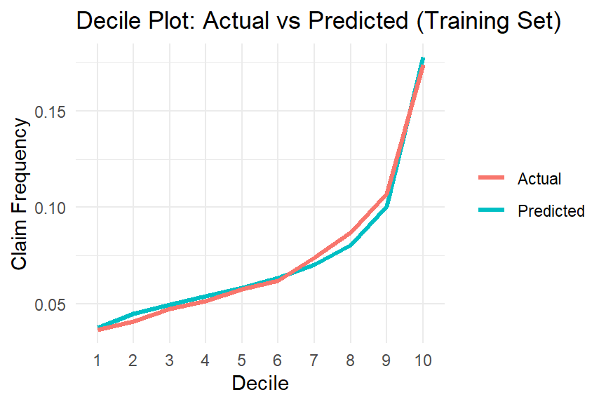
# Plot for the test set
ggplot(decile_summarytest, aes(x = factor(decile))) +
geom_line(aes(y = avg_predicted_claimnb, group = 1, colour = "Predicted"), linewidth = 1.2) +
geom_line(aes(y = avg_actual_claimnb, group = 1, colour = "Actual"), linewidth = 1.2) +
labs(
x = "Decile",
y = "Claim Frequency",
title = "Decile Plot: Actual vs Predicted (Test Set)"
) +
theme_minimal() +
guides(colour = guide_legend(title = NULL))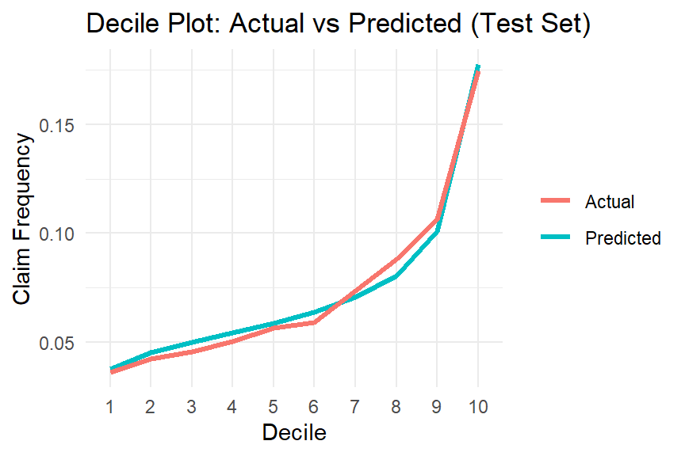
Model 2 (freqPoisson_full2)
# Step 1: Sort the datasets by predicted claim frequency
freMTPL2fulltrain2_sorted <- decile_fulltrain2 %>%
arrange(ClaimNb_cost / Exposure)
freMTPL2fulltest2_sorted <- decile_fulltest2 %>%
arrange(ClaimNb_cost / Exposure)
# Step 2: Compute total exposure
total_exposure_train2 <- sum(freMTPL2fulltrain2_sorted$Exposure)
total_exposure_test2 <- sum(freMTPL2fulltest2_sorted$Exposure)
# Step 3: Divide cumulative exposure into deciles
freMTPL2fulltrain2_sorted <- freMTPL2fulltrain2_sorted %>%
mutate(
cum_exposure = cumsum(Exposure),
decile = cut(
cum_exposure,
breaks = seq(0, total_exposure_train2, length.out = 11),
include.lowest = TRUE,
labels = FALSE
)
)
freMTPL2fulltest2_sorted <- freMTPL2fulltest2_sorted %>%
mutate(
cum_exposure = cumsum(Exposure),
decile = cut(
cum_exposure,
breaks = seq(0, total_exposure_test2, length.out = 11),
include.lowest = TRUE,
labels = FALSE
)
)
# Step 4: Calculate average predicted and actual claim frequencies within each decile
decile_summarytrain2 <- freMTPL2fulltrain2_sorted %>%
group_by(decile) %>%
summarise(
avg_predicted_claimnb = sum(ClaimNb_cost) / sum(Exposure),
avg_actual_claimnb = sum(AClaimNb) / sum(Exposure)
)
decile_summarytest2 <- freMTPL2fulltest2_sorted %>%
group_by(decile) %>%
summarise(
avg_predicted_claimnb = sum(ClaimNb_cost) / sum(Exposure),
avg_actual_claimnb = sum(AClaimNb) / sum(Exposure)
)
# Plot for the training set
ggplot(decile_summarytrain2, aes(x = factor(decile))) +
geom_line(aes(y = avg_predicted_claimnb, group = 1, colour = "Predicted"), linewidth = 1.2) +
geom_line(aes(y = avg_actual_claimnb, group = 1, colour = "Actual"), linewidth = 1.2) +
labs(
x = "Decile",
y = "Claim Frequency",
title = "Decile Plot: Actual vs Predicted (Training Set)"
) +
theme_minimal() +
guides(colour = guide_legend(title = NULL))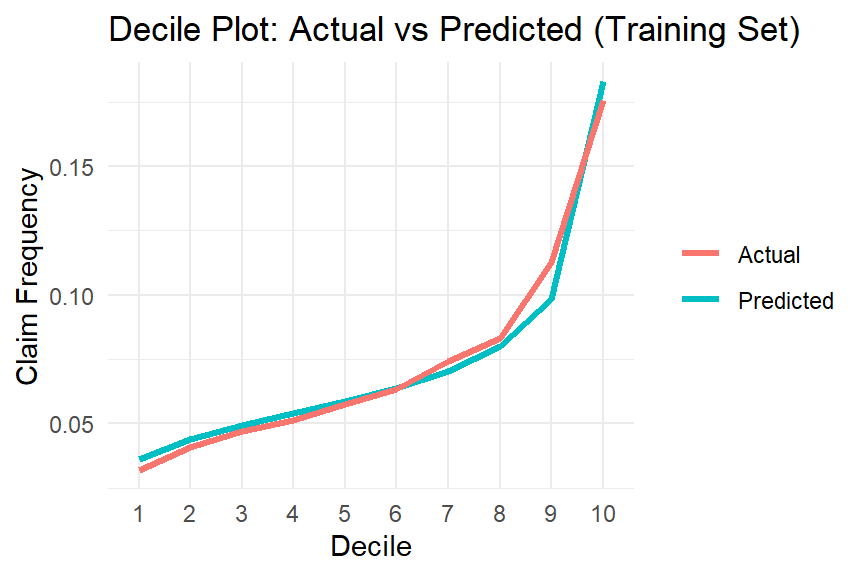
# Plot for the test set
ggplot(decile_summarytest2, aes(x = factor(decile))) +
geom_line(aes(y = avg_predicted_claimnb, group = 1, colour = "Predicted"), linewidth = 1.2) +
geom_line(aes(y = avg_actual_claimnb, group = 1, colour = "Actual"), linewidth = 1.2) +
labs(
x = "Decile",
y = "Claim Frequency",
title = "Decile Plot: Actual vs Predicted (Test Set)"
) +
theme_minimal() +
guides(colour = guide_legend(title = NULL))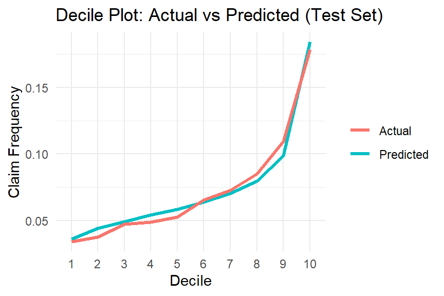
Both models appear to perform reasonably well from the three perspectives discussed above.
Exercise:
In addition to the Gini index introduced above, there are other techniques that can be used to directly compare two candidate models.
Please read Section 7 of Generalized Linear Models for Insurance Rating, with a particular focus on:
- Actual vs predicted plots
- You can also construct these plots across all categories of a variable of interest by comparing the average actual values with the corresponding model predictions for each category.
- Simple quantile plots
- Double lift charts.
Appendix
Chi-square Goodness-of-Fit Test for Frequency Data
When an analyst attempts to fit a statistical model to observed data, they may wonder how well the model reflects the data. In particular, how close are the observed values to those expected under the fitted model?
One statistical test that addresses this issue is the chi-square goodness-of-fit test; see Chi-Square Goodness of Fit Test for further details.
\chi^2 = \sum \frac{ (\text{observed} - \text{expected})^2 }{ \text{expected} }
Chi-square goodness-of-fit statistics can be used to compare different models. If the computed test statistic is large, then the observed and expected values are not close, suggesting that the model may provide a poor fit to the data.
References
Frees, Edward W, Gee Lee, and Lu Yang. 2016. “Multivariate Frequency-Severity Regression Models in Insurance.” Risks 4 (1): 4.
Frees, Edward W, Glenn Meyers, Richard A Derrig, et al. 2014. “Predictive Modeling Applications in Actuarial Science. Volume 2, Case Studies in Insurance.” Cambridge University Press.
Goldburd, Mark, Anand Khare, Dan Tevet, and Dmitriy Guller. 2016. “Generalized Linear Models for Insurance Rating.” Casualty Actuarial Society, CAS Monographs Series 5: 77.
Lee, Gee Y, and Peng Shi. 2019. “A Dependent Frequency–Severity Approach to Modeling Longitudinal Insurance Claims.” Insurance: Mathematics and Economics 87: 115–29.
Schelldorfer, Jürg, and Mario V Wuthrich. 2019. “Nesting Classical Actuarial Models into Neural Networks.” Available at SSRN 3320525.
Selvakumar, V, Dipak Kumar Satpathi, PP Kumar, and VV Haragopal. 2021. “Predictive Modeling of Insurance Claims Using Machine Learning Approach for Different Types of Motor Vehicles.” Accounting and Finance 9 (1): 1–14.
Wüthrich, Mario V, and Michael Merz. 2023. Statistical Foundations of Actuarial Learning and Its Applications. Springer Nature.